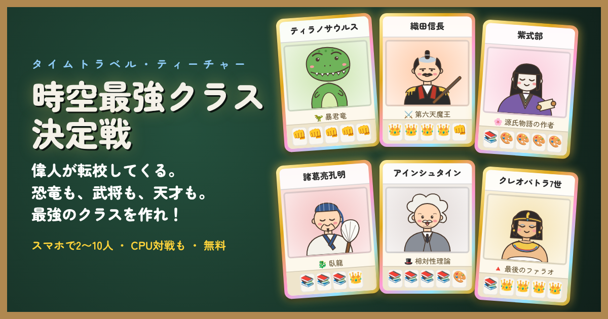
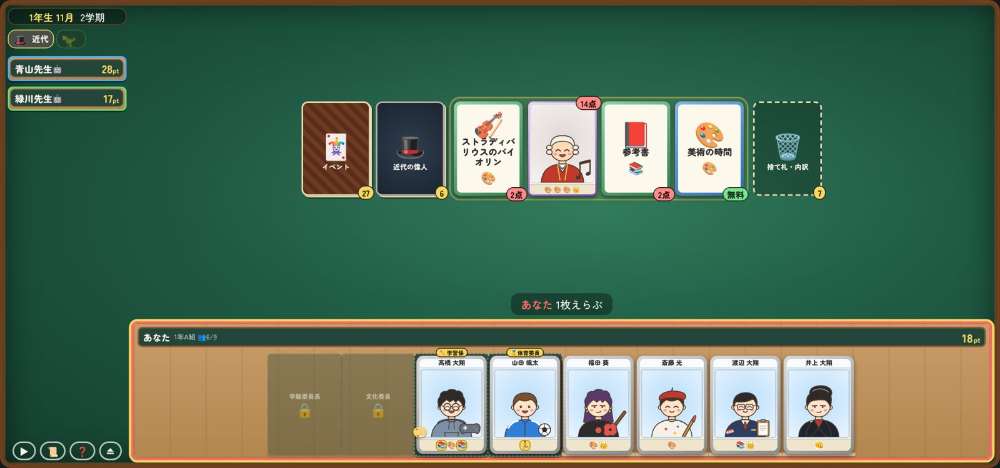

タイムトラベル・ティーチャー
時空最強クラス決定戦
偉人が転校してくる。恐竜も、武将も、天才も。
あらゆる時代から転校生を集めて、最強のクラスを作れ！

どんなゲーム？
プレイヤーは同じ学校の担任の先生。学期ごとに「白亜紀」「戦国」「古代エジプト」などの時代へタイムトラベルして、偉人や恐竜を自分のクラスに転校させます。授業・行事・時代のできごとでクラスポイントを稼ぎ、卒業式で一番ポイントの多いクラスが「時空最強クラス」です。
🦖 50人以上の偉人と恐竜
孔明、信長、紫式部、ダ・ヴィンチ、アインシュタイン、ティラノサウルス…。11の時代から転校してくる。
孔明、信長、紫式部、ダ・ヴィンチ、アインシュタイン、ティラノサウルス…。11の時代から転校してくる。
⚔️ 時代ごとのできごと
桶狭間の戦い、赤壁の戦い、巨大隕石、ペストの大流行、ノーベル賞。時代によって強いクラスが入れ替わる。
桶狭間の戦い、赤壁の戦い、巨大隕石、ペストの大流行、ノーベル賞。時代によって強いクラスが入れ替わる。
📱 スマホで最大10人
部屋番号を伝えるだけで通信対戦。ペア担任・チーム戦で8〜10人でも遊べる。CPU対戦なら1人でも。
部屋番号を伝えるだけで通信対戦。ペア担任・チーム戦で8〜10人でも遊べる。CPU対戦なら1人でも。

遊び方（3ステップ）
- 手番で場のカードを1枚取る：授業で点を取るか、点を払って偉人を転校させるか。
- 係を決める：学級委員長・文化委員・学習係・体育委員。係の子はアイコンが2倍。
- 卒業式で決着：1年（約30分）〜3年（じっくり）まで、長さを選べる。
くわしいルールはゲームの中の「遊び方」に載っています。
📺 配信・動画の方へ
配信・動画の投稿は大歓迎です。許可の連絡は要りません。収益化している配信・動画でも使ってかまいません。
- 通信対戦は最大10人（ペア担任・チーム戦）。コラボ配信にぴったりです
- 参加者はブラウザで開くだけ。アプリのインストールもアカウントも要りません
- ルームを作った人のスマホやPCがゲームを進めます。配信する人がルームを作ると安定します
- 画面に出る5桁の部屋番号は、配信に映すと視聴者が入ってこようとすることがあります。参加者には個別に伝えるのがおすすめです
- 概要欄には
https://timetravel-teacher.vercel.app/とハッシュタグ #時空最強クラス を書いてもらえるとうれしいです
🗂️ プレスキット
| タイトル | 時空最強クラス決定戦 〜タイムトラベル・ティーチャー〜 |
|---|---|
| ジャンル | カードを集めて戦うボードゲーム（タイムトラベル×学校） |
| 人数 | 1〜5人（ペア担任・チーム戦で最大10人）・CPU対戦あり |
| 時間 | 1年で約30分（1〜3年から選べる） |
| 遊べる場所 | スマホ・タブレット・PCのブラウザ（横向き）。ホーム画面に追加するとアプリとしても使える |
| 価格 | 無料 |
| URL | https://timetravel-teacher.vercel.app/ |
| ハッシュタグ | #時空最強クラス |
紹介文（そのまま使えます）
短い紹介（50字）
偉人や恐竜を転校させて、時空最強のクラスを作るボードゲーム。スマホで最大10人と遊べる。
長い紹介（150字）
プレイヤーは担任の先生。学期ごとに白亜紀・戦国・古代エジプトなどへタイムトラベルし、孔明や信長、ティラノサウルスを自分のクラスに転校させる。授業や時代のできごとでポイントを稼ぎ、卒業式で一番のクラスが優勝。スマホを持ち寄って最大10人で通信対戦でき、インストール不要・無料で遊べる。
画像


画像は、紹介・記事・配信のサムネイルに自由に使えます（クリックで保存）。